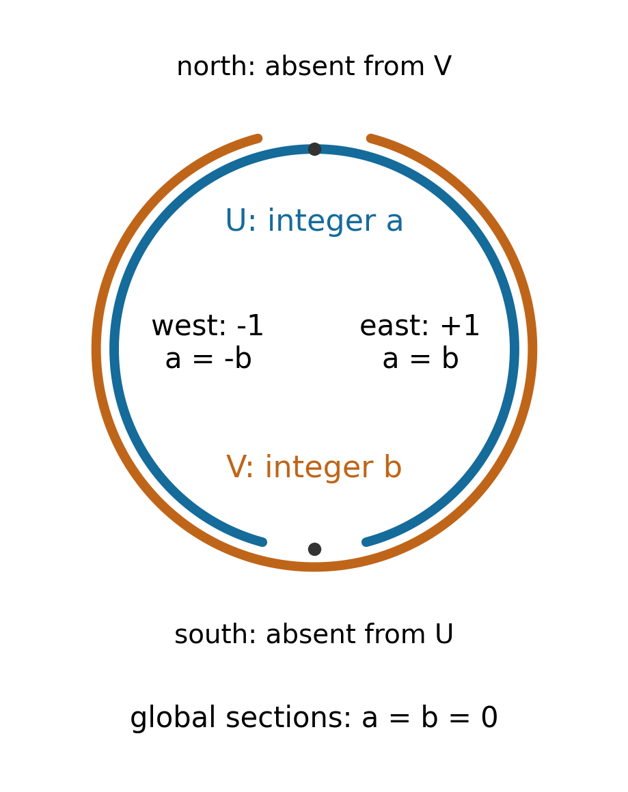

Sheaves on topological spaces
Written by GPT-6.1 Sol (OpenAI), in Codex at Ultra, October 2026. Self-checked by the writing AI, GPT-6.1 Sol. Public domain (CC0).
A function can be described on small open sets and reconstructed by agreement on overlaps. A germ remembers the function near one point, with the size of the neighbourhood forgotten. Sheaves separate these two operations: restricting information and reconstructing information. This lesson develops the constructions that let us describe geometric objects locally and then assemble them.
We assume the topological-space background of Point-Set Topology, and groups, rings, functors and universal properties from Category Theory and Homological Methods. Only elementary category theory is needed here; the adjunctions used in the lesson are constructed explicitly. We prove the basic sheaf facts used in Sheaves of modules and their derived categories; that lesson supplies the abelian-category results mentioned at the end.
Basic references are [Stacks] and [Vakil]. We use arbitrary topological spaces. No separation condition is imposed on the space. This matters for the example of a skyscraper near the end.
1. Information on open sets
Write \(\operatorname{Open}(X)\) for the category whose objects are open subsets of \(X\), with one arrow \(V\to U\) when \(V\subset U\). A presheaf of sets is a contravariant functor
\[ F:\operatorname{Open}(X)^{\mathrm{op}}\longrightarrow\operatorname{Sets}. \]Thus it gives a set \(F(U)\) for each open \(U\) and restriction maps \(s\mapsto s|_V\), satisfying \(s|_U=s\) and \((s|_V)|_W=s|_W\). Elements of \(F(U)\) are called sections over \(U\). A morphism of presheaves is a family \(F(U)\to G(U)\) commuting with every restriction.
A sheaf is a presheaf for which compatible local sections have exactly one global section. More precisely, if \(U=\bigcup_{i\in I}U_i\), then
\[ F(U)\longrightarrow\prod_i F(U_i) \rightrightarrows\prod_{i,j}F(U_i\cap U_j) \tag{1.1} \]is an equalizer. The two arrows restrict the \(i\)-component and the \(j\)-component to the overlap. An element of the equalizer is a family \((s_i)\) with \(s_i|_{U_i\cap U_j}=s_j|_{U_i\cap U_j}\). The assertion includes both existence and uniqueness of its preimage.
Take the empty covering of the empty set in (1.1). Both products are singleton sets, so \(F(\varnothing)\) must be a singleton. For abelian groups or modules the corresponding final object is zero; for unital rings it is the zero ring. We allow the zero ring throughout the course.
Example 1.1 (functions defined by a local condition). Let \(T\) be a topological space. Continuous functions \(U\to T\), with ordinary restriction, form a sheaf. A compatible family determines a unique function on the union. It is continuous because the preimage of every open subset of \(T\) is a union of open preimages on the \(U_i\). Smooth functions on a smooth manifold and holomorphic functions on a complex manifold also form sheaves: smoothness and holomorphicity can be tested near each point. The relevant ring operations are pointwise.
The same argument works for all functions \(U\to A\). Its stalks are generally much larger than \(A\): a germ remembers a function on a neighbourhood, not just its value at the point.
Example 1.2 (constant values versus locally constant functions). Fix a set \(A\). The constant presheaf assigns \(A\) to every nonempty open set and a singleton to the empty set; restrictions between nonempty opens are identities. If \(A\) has two different elements and \(U,V\) are disjoint nonempty opens, choosing different elements on \(U\) and \(V\) gives a compatible family on \(U\cup V\) that cannot come from one element of \(A\).
Instead, let \(A_X(U)\) be the set of locally constant maps \(U\to A\), where \(A\) has the discrete topology. These form a sheaf by Example 1.1. This is the constant sheaf. On a connected nonempty open set every such function is constant; on an open set with several components different constants may occur. For a discrete two-point space its global sections are \(A\times A\).
Example 1.3 (a global bound is not local). Bounded real-valued continuous functions form a presheaf on \(\mathbb R\). On \(U_n=(-n,n)\), the function \(x\mapsto x\) is bounded. These sections agree on every overlap, but their only possible glued function on \(\mathbb R\) is unbounded. Thus this presheaf fails the existence part of the sheaf condition. It does satisfy uniqueness: the functions agree if they agree on a cover. Such a presheaf is called separated.
2. Germs and reconstruction
For \(x\in X\), the stalk \(F_x\) is the colimit of \(F(U)\) over open neighbourhoods of \(x\), ordered by shrinking. Concretely, a representative is a pair \((U,s)\) with \(x\in U\) and \(s\in F(U)\). Two pairs \((U,s)\), \((V,t)\) represent the same germ if there is an open \(W\) with
\[ x\in W\subset U\cap V,\qquad s|_W=t|_W. \]Intersections of neighbourhoods show that this is an equivalence relation. Write \(s_x\) for the germ of \(s\). A presheaf morphism \(a:F\to G\) induces \(a_x:F_x\to G_x\).
Lemma 2.1 (germs determine a section). If \(F\) is a sheaf and \(U\) is open, then
\[ F(U)\longrightarrow\prod_{x\in U}F_x,\qquad s\longmapsto(s_x)_{x\in U} \tag{2.1} \]is injective. The same conclusion holds for a separated presheaf.
Proof. If two sections have equal germs at \(x\), they agree on some neighbourhood \(W_x\subset U\). The \(W_x\) cover \(U\); uniqueness for that covering gives equality of the sections. This also covers \(U=\varnothing\), where uniqueness for the empty covering says there is at most one section. \(\square\)
Not every family of germs comes from a section. It must be locally representable by sections. This observation gives sheafification directly, without introducing a sequence of corrections to the presheaf.
Theorem 2.2 (sheafification). Every presheaf \(P\) has a sheaf \(P^{\#}\) and a natural map \(\eta:P\to P^{\#}\) with the following properties.
- For every sheaf \(G\), composition with \(\eta\) gives a bijection \(\operatorname{Hom}(P^{\#},G)\cong\operatorname{Hom}(P,G)\).
- The map \(P_x\to P^{\#}_x\) is a bijection for every \(x\).
- If \(P\) is separated, \(P(U)\to P^{\#}(U)\) is injective for every open \(U\).
Proof. Define \(P^{\#}(U)\) to consist of families \(\sigma=(\sigma_x)_{x\in U}\), with \(\sigma_x\in P_x\), satisfying the following condition: each \(x\in U\) has a neighbourhood \(V\subset U\) and a section \(p\in P(V)\) such that \(\sigma_y=p_y\) for every \(y\in V\). Restriction drops the coordinates outside the smaller open set. The map \(\eta_U\) sends \(p\) to its family of germs.
Families agreeing on overlaps glue coordinatewise. At any point a local representative on one covering set remains a local representative on the union. The glued family therefore satisfies the defining condition. Uniqueness is coordinatewise, including the empty family on the empty set. Thus \(P^{\#}\) is a sheaf.
To verify (2), a germ of a section \(\sigma\) of \(P^{\#}\) is, near its base point \(x\), represented by \(\eta(p)\). This proves surjectivity of \(\eta_x\). If \(p\) and \(q\) have the same image germ, their families of germs agree on some neighbourhood of \(x\). In particular \(p_x=q_x\) in \(P_x\), so the original germs were equal. This proves injectivity. For (3), if \(\eta_U(p)=\eta_U(q)\), equality of germs supplies a cover on which \(p\) and \(q\) agree; separatedness then gives \(p=q\).
Let \(b:P\to G\), with \(G\) a sheaf. For \(\sigma\in P^{\#}(U)\), choose local representatives \(p_i\in P(V_i)\). The sections \(b(p_i)\) have equal germs on each overlap, because their germs are the images of the same \(\sigma_x\). By Lemma 2.1 they agree on the overlaps. Glue them in \(G\) and call the result \(b^{\#}(\sigma)\). Another choice of representatives gives the same germs and hence the same section. Restriction commutes with this construction. It defines a sheaf morphism extending \(b\).
Every section of \(P^{\#}\) is locally in the image of \(P\), so any extension of \(b\) agrees locally with this one. Uniqueness for \(G\) gives the uniqueness of the extension. This proves (1). \(\square\)
This proof also shows that if \(P\) is already a sheaf, \(\eta\) is an isomorphism: locally represented families glue in \(P\). Sheafification is functorial, because applying a presheaf morphism to the germs preserves local representability.
The sheafification of the constant presheaf is \(A_X\). Indeed, a locally representable family of constant-presheaf germs is exactly a locally constant map to \(A\). The sheafification of the bounded-continuous-function presheaf is the full sheaf of continuous real-valued functions: every continuous real function is bounded on some neighbourhood of each point, by continuity and a bounded interval around its value.
3. Maps that can be checked point by point
A monomorphism is a map cancellable on its left: \(a b=a c\) implies \(b=c\). An epimorphism is cancellable on its right: \(b a=c a\) implies \(b=c\). These categorical definitions do not mention sections.
Theorem 3.1 (stalk criteria for sheaves of sets). A morphism \(a:F\to G\) is a monomorphism, epimorphism or isomorphism precisely when every \(a_x\) is, respectively, injective, surjective or bijective.
Proof for monomorphisms. If all \(a_x\) are injective, equality \(a_U(s)=a_U(t)\) gives \(s_x=t_x\) everywhere, hence \(s=t\) by Lemma 2.1. Thus each \(a_U\) is injective, which implies cancellation of sheaf morphisms.
Conversely, fix an open \(U\). The sheaf \(h_U\) assigns a singleton to \(V\) if \(V\subset U\), and the empty set otherwise. Its sheaf condition says that a union is contained in \(U\) if all its members are. A morphism \(h_U\to F\) is uniquely determined by the section of \(F(U)\) assigned to its singleton on \(U\); its other components are restrictions of that section. Therefore \(\operatorname{Hom}(h_U,F)=F(U)\). If \(a\) is monic, cancellation with \(h_U\) says that \(a_U\) is injective. If two germs have equal images, choose representatives on a common neighbourhood and then shrink until their images agree. Injectivity on that smaller open set makes the representatives equal, so \(a_x\) is injective.
Proof for epimorphisms. Suppose all \(a_x\) are surjective. Every \(g\in G(U)\) has, near each \(x\in U\), a lift \(s\in F(V)\): lift \(g_x\), choose a representative, and shrink until its image equals \(g|_V\). If \(b,c:G\to H\) agree after \(a\), they agree on all these local restrictions of \(g\). The sheaf condition in \(H\) gives \(b_U(g)=c_U(g)\), so \(b=c\).
For the converse, let \(\Omega(U)\) be the set of open subsets of \(U\), with restriction \(W\mapsto W\cap V\). These form a sheaf: compatible opens glue by union. For \(g\in G(U)\), define
\[ \chi_U(g)=\{x\in U:g_x\text{ belongs to the image of }a_x\}. \]This subset is open. Membership at \(x\) supplies a local lift after shrinking, which establishes membership near \(x\). The maps \(\chi_U\) commute with restriction and form a morphism \(G\to\Omega\). There is also a morphism \(\tau:G\to\Omega\) sending every section over \(U\) to \(U\). Since \(\chi a=\tau a\), an epimorphism \(a\) forces \(\chi=\tau\). Represent any germ of \(G_x\) by \(g\in G(U)\). Then \(x\in\chi_U(g)=U\), which proves surjectivity of \(a_x\).
Proof for isomorphisms. An isomorphism has bijective stalk maps. Conversely, bijective stalk maps give injectivity on sections and local lifts as above. Any two local lifts agree on overlaps by injectivity, so they glue in \(F\). Thus \(a_U\) is bijective for every \(U\), and the inverse maps commute with restriction. \(\square\)
The proof of the epimorphism criterion concerns sheaves of sets. Epimorphisms of sheaves of rings have a different meaning: for example, a localization map of rings can be epic without being surjective. We will use the stalk-surjectivity terminology for a ring-sheaf map when that is what is meant.
Example 3.2 (local logarithms). On \(X=\mathbb C^{\times}\), let \(\mathcal O\) be the sheaf of holomorphic functions and \(\mathcal O^{\times}\) its sheaf of nowhere-zero holomorphic functions. Exponentiation is a morphism from the additive sheaf \(\mathcal O\) to the multiplicative sheaf \(\mathcal O^{\times}\). For \(b\ne0\), choose \(c\in\mathbb C\) with \(e^c=b\). The convergent power series
\[ L(w)=c+\sum_{n\geq1}\frac{(-1)^{n+1}}{n}\left(\frac{w-b}{b}\right)^n, \qquad |w-b|<|b|, \]satisfies \(e^{L(w)}=w\): differentiation gives \(L'(w)=1/w\), so \(e^{L(w)}/w\) is constant, with value one at \(b\). A nowhere-zero holomorphic function takes a sufficiently small neighbourhood of a point into this disk around its value. Composing with \(L\) gives a local lift. Hence exponentiation is surjective on stalks, and an epimorphism of sheaves of sets or abelian groups.
Nevertheless, the global section \(z\mapsto z\) has no holomorphic logarithm on \(\mathbb C^{\times}\). If \(e^{h(z)}=z\), differentiation gives \(h'(z)=1/z\). The integral of a derivative around the unit circle is zero, whereas \(\int_{|z|=1}dz/z=2\pi i\). This contradiction shows exactly what is absent: the local lifts cannot be made to agree globally.
4. Moving sheaves between spaces
Let \(f:X\to Y\) be continuous. A sheaf \(F\) on \(X\) has a direct image
\[ (f_*F)(V)=F(f^{-1}V),\qquad V\subset Y\text{ open}. \]Inverse images of open covers are open covers, so this is a sheaf. Its restrictions and its action on morphisms are those of \(F\). If \(g:Y\to Z\), then \((g\circ f)_*=g_*f_*\), because the inverse images of open sets agree.
There is also an inverse image of a sheaf \(G\) on \(Y\). First form the presheaf
\[ (f_pG)(U)=\varinjlim_{V\supset f(U)}G(V), \tag{4.1} \]where \(V\) runs over open sets of \(Y\), ordered by shrinking. Finite intersections make this a directed system. For \(U'\subset U\), every \(V\) occurring for \(U\) also occurs for \(U'\); this induces restriction. Define
\[ f^{-1}G=(f_pG)^{\#}. \tag{4.2} \]The sheafification in (4.2) is essential: local choices of neighbourhoods in \(Y\) need not be describable by one neighbourhood of the entire set \(f(U)\).
Theorem 4.1 (inverse image and its adjunction). There are natural bijections
\[ (f^{-1}G)_x\cong G_{f(x)},\qquad \operatorname{Hom}_X(f^{-1}G,F)\cong\operatorname{Hom}_Y(G,f_*F). \tag{4.3} \]They hold for sheaves of sets and for sheaves of abelian groups. Inverse images compose by a canonical natural isomorphism \(f^{-1}g^{-1}\cong(g\circ f)^{-1}\).
Proof. A representative of a germ of \(f_pG\) at \(x\) is a section \(t\in G(V)\), together with an open \(U\ni x\) for which \(f(U)\subset V\). Send it to \(t_{f(x)}\). The equivalences in either colimit respect this map. Conversely, if \(f(x)\in V\) and \(t\in G(V)\), it represents an element of \(f_pG(f^{-1}V)\), hence a germ at \(x\). These constructions are inverse: changing \(V\) to a smaller neighbourhood corresponds to restriction over its inverse image. For injectivity explicitly, equality of two image germs gives an open \(W\ni f(x)\) inside both domains on which the sections agree; shrink the neighbourhood of \(x\) to its intersection with \(f^{-1}W\). Theorem 2.2 now identifies this stalk with \((f^{-1}G)_x\).
For the adjunction, let \(b:G\to f_*F\). A representative \(t\in G(V)\) in (4.1) maps to \(b_V(t)|_U\), since \(U\subset f^{-1}V\). The formula respects restriction in \(V\) and \(U\), giving \(f_pG\to F\), and Theorem 2.2 extends it uniquely to \(f^{-1}G\to F\).
In the opposite direction, a map \(c:f_pG\to F\) gives
\[ G(V)\longrightarrow(f_pG)(f^{-1}V) \xrightarrow{c}F(f^{-1}V). \]The first arrow uses the domain \(V\), which contains \(f(f^{-1}V)\). These maps commute with restriction. Starting with \(b\), the second construction returns \(b\), since the formula restricts \(b_V(t)\) to all of \(f^{-1}V\). Starting with \(c\), its naturality for \(U\subset f^{-1}V\) returns \(c_U\) on every representative \(t\) of (4.1). Sheafification does not change the maps into \(F\), so these are inverse bijections in (4.3).
For abelian groups, all the colimits, maps and local gluing preserve addition. The same formulas therefore give an adjunction in that category. Finally \(f^{-1}g^{-1}\) and \((g\circ f)^{-1}\) are both left adjoints to \(g_*f_*\). The unique isomorphism between left adjoints compatible with their adjunctions gives the composition isomorphism. The analogous isomorphism for the identity map is the identity under the same universal property; associativity follows from its uniqueness. \(\square\)
Corollary 4.2 (skyscrapers). Let \(i_x:\{x\}\to X\) be the inclusion, and let \(A\) be a set. The sheaf \(i_{x,*}A\) has sections \(A\) on an open containing \(x\), and a singleton on any other open. There is a natural bijection
\[ \operatorname{Hom}_X(F,i_{x,*}A)\cong\operatorname{Hom}_{\operatorname{Sets}}(F_x,A). \tag{4.4} \]The same statement holds for abelian groups, with zero on opens not containing \(x\).
Proof. It is the adjunction of Theorem 4.1 for \(i_x\); a sheaf on the one-point space is its set of sections, and its inverse image is the stalk. Directly, a map \(F_x\to A\) sends \(s\in F(U)\) to the image of \(s_x\) if \(x\in U\). Conversely, the components of a morphism into the skyscraper on all neighbourhoods of \(x\) are compatible with shrinking, so they give a map from the colimit \(F_x\). These operations are inverse. \(\square\)
Example 4.3 (a skyscraper need not have only one nonzero stalk). For an abelian group \(A\),
\[ (i_{y,*}A)_x= \begin{cases} A,&x\in\overline{\{y\}},\\ 0,&x\notin\overline{\{y\}}. \end{cases} \]In the first case every neighbourhood of \(x\) contains \(y\), so the directed system is constantly \(A\) with identity maps. In the second case there is a neighbourhood avoiding \(y\), and its smaller neighbourhoods are cofinal and have value zero. On a Hausdorff space \(\overline{\{y\}}=\{y\}\). On the space \(\{\eta,s\}\) with opens \(\varnothing,\{\eta\},\{\eta,s\}\), the skyscraper at \(\eta\) has stalk \(A\) at both points.
For a continuous \(f:X\to Y\), Theorem 4.1 computes the stalks of \(f^{-1}i_{y,*}A\) as \(A\) at points with \(f(x)\in\overline{\{y\}}\), and zero elsewhere. As a particularly transparent case, the inverse image of the sheaf \(A\) on the one-point space is \(A_X\), rather than the constant presheaf.
5. Assembling objects and maps
Suppose \(X=\bigcup_i U_i\) and we have sheaves \(F_i\) on \(U_i\). A gluing datum consists of isomorphisms
\[ \theta_{ij}:F_j|_{U_i\cap U_j}\longrightarrow F_i|_{U_i\cap U_j} \]such that \(\theta_{ii}=1\) and \(\theta_{ij}\theta_{jk}=\theta_{ik}\) on each triple intersection. Thus \(\theta_{ji}=\theta_{ij}^{-1}\). The direction of the subscripts says that a section in chart \(j\) is translated into chart \(i\).
Theorem 5.1 (gluing sheaves). A gluing datum gives a sheaf \(F\) on \(X\) with isomorphisms \(F|_{U_i}\cong F_i\) inducing the given transition maps. The pair consisting of \(F\) and these identifications is unique up to unique compatible isomorphism. Compatible local morphisms also glue uniquely.
Proof. For an arbitrary open \(W\subset X\), set
\[ F(W)=\left\{(s_i):s_i\in F_i(W\cap U_i),\quad s_i|_{W\cap U_i\cap U_j}=\theta_{ij}(s_j|_{W\cap U_i\cap U_j})\right\}. \tag{5.1} \]Restriction is coordinatewise. A compatible family over a cover of \(W\) glues in each \(F_i\). The transition condition holds on the covering pieces and hence on their union, by uniqueness in \(F_i\). This proves the sheaf condition.
If \(W\subset U_k\), projection to the \(k\)-component is a bijection \(F(W)\to F_k(W)\). Its inverse sends \(s\) to the family \(\theta_{ik}(s|_{W\cap U_i})\); the cocycle identity gives its compatibility. The resulting sheaf isomorphisms have precisely the transitions \(\theta_{ij}\).
If another sheaf comes with such identifications, restrict a section to each \(W\cap U_i\) and translate it into \(F_i\). This gives a map to (5.1). Conversely, a compatible tuple translates back to compatible sections of the other sheaf and glues there. These inverse constructions prove uniqueness.
For morphisms, suppose maps \(b_i:F_i\to G_i\) commute with the transition maps for two gluing data. Applying \(b_i\) coordinatewise preserves the conditions in (5.1), and defines the glued morphism. A global morphism with these restrictions must have those coordinates and is unique. In particular, maps between already given sheaves glue when their restrictions agree on overlaps. \(\square\)
Example 5.2 (the sign local system on a circle). Let \(U\) be the circle minus its south pole and \(V\) the circle minus its north pole. Both are connected. Their intersection has two connected components, called east and west. Glue \(\mathbb Z_U\) and \(\mathbb Z_V\) using the identity on east and multiplication by \(-1\) on west. The inverse transition has the same signs, so this is a gluing datum.
A global section is a pair of integers \((a,b)\), since both charts are connected. On east it satisfies \(a=b\); on west it satisfies \(a=-b\). Consequently \(2a=0\) in \(\mathbb Z\), and \(a=b=0\). All stalks are \(\mathbb Z\), but the global sections are zero. The constant sheaf \(\mathbb Z_{S^1}\) has global sections \(\mathbb Z\). Transition maps, and not just the list of stalks, determine the sheaf.

Figure 1. The two charts miss opposite points of the same circle. The coloured arcs are offset slightly for legibility. Their two overlap components impose both equations on a global section. Theorem 5.1 constructs the sheaf; Example 5.2 computes its global sections. Editable figure.
6. Working on a basis
The topology of a spectrum will have a distinguished basis. To construct its sheaf, we need to know exactly what data on that basis suffice.
Let \(\mathcal B\) be any basis of open subsets of \(X\); it need not be closed under intersections. A presheaf on \(\mathcal B\) gives sets \(H(B)\) and restriction maps for inclusions of basis members. A family \(s_i\in H(B_i)\) over a basis cover \(B=\bigcup_i B_i\) is compatible if its restrictions agree on every basis member \(C\subset B_i\cap B_j\). A sheaf on the basis is a presheaf for which each such family comes from a unique section of \(H(B)\). If the intersection is itself a basis member, this is the ordinary overlap condition. Empty coverings are included when \(\varnothing\in\mathcal B\).
Theorem 6.1 (extension from a basis). Restriction gives an equivalence between sheaves on \(X\) and sheaves on \(\mathcal B\). The result holds for sets, groups, rings, and modules over a sheaf of rings.
Proof. Given \(H\) on \(\mathcal B\), define, for an arbitrary open \(W\),
\[ E(H)(W)=\left\{(s_B)_{B\in\mathcal B,\ B\subset W}:s_B\in H(B), \quad s_B|_C=s_C\text{ whenever }C\subset B\subset W\right\}. \tag{6.1} \]The empty index family gives a singleton for the empty open set if the basis omits it. Restriction keeps the components indexed inside the smaller open. If \(W=B_0\in\mathcal B\), projection to \(s_{B_0}\) is a bijection with \(H(B_0)\): all other components are its restrictions. These bijections respect restrictions.
We verify gluing over an arbitrary open cover \(W=\bigcup_i W_i\). Suppose compatible elements of \(E(H)(W_i)\) are given. For \(B\in\mathcal B\), \(B\subset W\), cover \(B\) by all basis members \(C\subset B\cap W_i\). On each such \(C\), use the component from the datum on \(W_i\). If \(C\) occurs in several \(W_i\), the components agree because the original data agree on overlaps. Restrictions of two chosen components agree on every basis subset of their intersection, using either original compatibility or compatibility within one tuple. The basis sheaf condition gives a unique \(s_B\in H(B)\).
For \(D\subset B\), both \(s_B|_D\) and \(s_D\) restrict to the prescribed local components on a basis cover of \(D\). Uniqueness gives equality. Thus the \(s_B\) form an element of (6.1) and restrict to the given tuples. The same uniqueness proves that the glued element is unique. Hence \(E(H)\) is a sheaf.
For a sheaf \(F\) on \(X\), sending a section on \(W\) to all its basis restrictions gives \(F(W)\to E(F|_{\mathcal B})(W)\). It is injective since these basis members cover \(W\). A tuple in the target gives compatible sections on that cover: agreement can be checked on basis members covering each overlap. Glue in \(F\) to obtain the inverse. A map of basis sheaves acts on (6.1) componentwise. These constructions show that restriction and \(E\) are inverse up to the indicated natural isomorphisms, including on morphisms.
For groups and rings, (6.1) is a subset of a product closed under componentwise operations, and all gluing maps preserve those operations. For modules, the ring on an open \(W\) acts through its restrictions on the corresponding components. The same construction therefore proves the structured versions. \(\square\)
Sheafification also preserves these algebraic structures. In Theorem 2.2, take stalks in groups, rings or modules, and use operations on locally represented germs. Near a point, finitely many representatives can be placed on one common neighbourhood. Their sum, product or scalar action is represented there by the corresponding operation on sections. The algebraic identities hold locally and thus everywhere. The universal extension to a sheaf respects the operations for the same reason.
7. Exercises
Each exercise has a complete solution below. The first two isolate definitions; the next two test local versus global reasoning; the last two explain why basis and inverse-image constructions work.
Exercise 1 (easy). For a nonzero abelian group \(A\), let \(P(U)=A\) for nonempty \(U\), and \(P(\varnothing)=0\), with identity restrictions between nonempty opens. Show that \(P\) is separated. If \(X\) contains two disjoint nonempty open sets, show that \(P\) is not a sheaf. Identify its sheafification.
Exercise 2 (easy). On the two-point space in Example 4.3, compute the sections and stalks of the skyscraper \(i_{\eta,*}A\). Starting from a homomorphism \(F_\eta\to A\), write every component of the associated sheaf morphism \(F\to i_{\eta,*}A\).
Exercise 3 (medium). Show that exponentiation on \(\mathbb C^{\times}\) is a stalk-surjective sheaf morphism. Compute its kernel sheaf. Explain why the global section \(z\) still has no lift, and why a lift of \(z^m\) exists exactly when \(m=0\), for \(m\in\mathbb Z\).
Exercise 4 (medium). Replace \(\mathbb Z\) in Example 5.2 by an abelian group \(A\). Compute the global sections of the resulting sign local system. Compare the answers for \(A=\mathbb Z\), \(\mathbb Z/2\mathbb Z\) and \(\mathbb Z/6\mathbb Z\), and with the constant sheaf.
Exercise 5 (medium). Prove that \(f^{-1}\) commutes with finite limits of sheaves of sets. Give a counterexample showing that it need not commute with infinite products.
Exercise 6 (hard). Let \(\mathcal B\) be a basis closed under nonempty finite intersections. Suppose \(H\) is a presheaf on \(\mathcal B\) satisfying the equalizer condition for basis covers. Construct its extension using germs represented on basis members. Prove that this agrees with (6.1), and explain the empty-open convention.
8. Solutions
Solution 1. On a nonempty open, equality on a cover implies equality on any nonempty covering member, because its restriction map is the identity. On the empty open there is only zero. This proves separatedness. For disjoint nonempty opens \(U,V\), choose \(0\) on \(U\) and a nonzero \(a\) on \(V\). They agree on the empty overlap but cannot both be restrictions of one element of \(P(U\cup V)\). The stalk at every point is \(A\), and local representability of a family of stalk values means it is locally constant. Thus Theorem 2.2 gives \(P^{\#}=A_X\).
Solution 2. The sections are zero on \(\varnothing\), and \(A\) on each of \(\{\eta\}\) and \(X\); the restriction \(A\to A\) is the identity. The only neighbourhood of \(s\) is \(X\), and the smallest neighbourhood of \(\eta\) is \(\{\eta\}\). Both stalks are \(A\). If \(u:F_\eta\to A\), the component on either nonempty open sends \(t\) to \(u(t_\eta)\); the component on the empty open is zero. These formulas commute with restriction, and conversely compatible components on neighbourhoods of \(\eta\) give a homomorphism from the stalk colimit. This is the adjunction explicitly.
Solution 3. A local logarithm is constructed by choosing a small disk around the nonzero value that avoids zero and composing with a logarithm on that disk. The kernel consists of holomorphic functions with values in \(2\pi i\mathbb Z\). Such a function is locally constant, since this subset of \(\mathbb C\) is discrete. The kernel is consequently the constant sheaf \(2\pi i\mathbb Z_X\). If \(e^h=z^m\), differentiation gives \(h'=m/z\). Integration round the unit circle yields \(0=2\pi i m\). Thus \(m=0\), for which \(h=0\) is a lift. Local logarithms can differ by kernel sections on overlaps; surjectivity of stalks does not eliminate that obstruction.
Solution 4. A global section is \((a,b)\) with \(a=b=-b\). Therefore it is determined by \(a\in A[2]=\{a\in A:2a=0\}\). For \(\mathbb Z\) this is zero. For \(\mathbb Z/2\mathbb Z\) it is the whole group, and multiplication by \(-1\) is the identity, so the glued sheaf is constant. For \(\mathbb Z/6\mathbb Z\), the subgroup consists of \(0\) and \(3\). The constant sheaf on the connected circle has global sections \(A\) in each case.
Solution 5. Limits of sheaves of sets are computed on sections: limits of compatible families satisfy the sheaf condition coordinatewise. A filtered colimit of sets commutes with finite limits. For finite products this follows by putting finitely many representatives on one later index, and for equalizers by putting the finitely many required equalities on one later index. Applying this to neighbourhoods shows that stalks commute with finite limits. The natural comparison \(f^{-1}(\varprojlim_jG_j)\to\varprojlim_jf^{-1}G_j\) therefore has at \(x\) the bijection between the finite limit of \((G_j)_{f(x)}\) and the same finite limit. Theorem 3.1 makes it an isomorphism.
For an infinite product, let \(f:\{0\}\to\mathbb R\) be the inclusion, and let \(G_n\) be the sheaf of continuous real functions for every \(n\geq1\). Choose a continuous function \(t_n\) that is zero on \([-1/(2n),1/(2n)]\) and is nonzero at \(1/n\), for example \(t_n(x)=\max(0,|x|-1/(2n))\). The tuple \((t_n)_n\) defines a section of \(\prod_nG_n\) on \(\mathbb R\). Its germ at zero is nonzero: every neighbourhood of zero contains \(1/n\) for some sufficiently large \(n\), so the entire tuple does not vanish on that neighbourhood. But every individual germ \((t_n)_0\) is zero. Hence \((\prod_nG_n)_0\to\prod_n(G_n)_0\) is not injective. For this \(f\), this is exactly the inverse-image comparison.
Solution 6. For \(x\in X\), form \(H_x=\varinjlim_{x\in B\in\mathcal B}H(B)\). The basis property makes the index directed; equality of representatives means equality on a smaller basis neighbourhood. Let \(\widetilde H(W)\) be the families \((a_x)\) on \(W\) that are, near each point, the germs of one section of \(H(B)\). Coordinatewise gluing proves this is a sheaf, as in Theorem 2.2.
For a basis member \(B\), the map \(H(B)\to\widetilde H(B)\) is injective: equal germs give a basis cover on which the representatives agree, and uniqueness on that cover gives equality. Given a locally represented family on \(B\), choose a basis cover and representing sections. Their germs agree on overlaps. Cover each overlap by smaller basis members on which the sections agree, and use separatedness there to obtain the compatibility required for the basis cover of \(B\). The sheaf condition for \(H\) glues them. Thus \(H(B)=\widetilde H(B)\).
A tuple in (6.1) gives germs by choosing a basis neighbourhood at each point. Independence of the choice follows by restricting to a basis neighbourhood in the intersection. Conversely, a locally represented germ family restricts on each \(B\subset W\) to the unique section just constructed; uniqueness makes these sections compatible. The two constructions are inverse and commute with restriction. If \(\varnothing\) is in the basis, its empty-cover axiom forces a final object. If it is absent, the extension assigns a final object by the empty tuple. In either convention the extended sheaf satisfies the empty-cover axiom.
What this lesson does not prove
For a sheaf of rings \(\mathcal R\), sheaves of \(\mathcal R\)-modules form an abelian category. Kernels are computed on sections, cokernels by sheafifying sectionwise cokernels, and a sequence is exact exactly when its stalk sequences are exact. These are Sheaves of modules and their derived categories, Theorem 2.1; they apply to abelian sheaves by taking \(\mathcal R=\mathbb Z_X\). The exactness of inverse image on abelian sheaves is proved in that lesson's Theorem 4.1. We have proved its prerequisite sheafification, stalk-isomorphism and inverse-image constructions here.
References
- [Stacks] The Stacks project authors, The Stacks project, chapter Sheaves on Spaces: Tag 0079, Tag 007T, Tags 007Y–0080, Tag 008F, Tag 008H, Tag 009C, Tags 009N–009Q, and Tag 00AL. These links use the AI Integrated Stacks Project English edition.
- [Vakil] Ravi Vakil, The Rising Sea: Foundations of Algebraic Geometry, public draft of 27 July 2024, Chapter 2, especially Sections 2.2–2.5 and 2.7. Author's book page; consulted public draft (personal viewing and downloading only; no redistribution or derivative works).
- [Module sheaves] Sheaves of modules and their derived categories, Theorems 2.1 and 4.1, in Derived categories and sheaf operations. Open lesson.